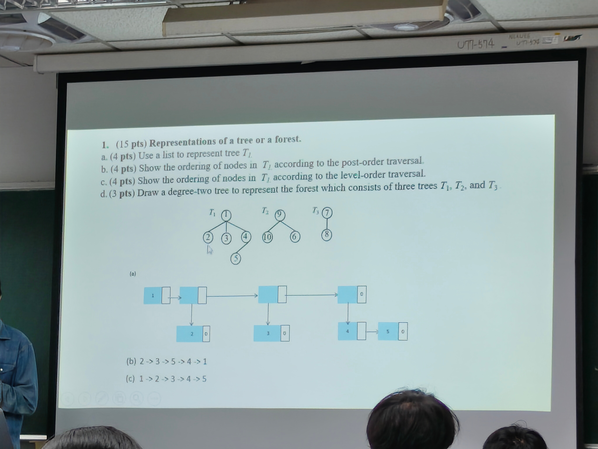

本題必備背景知識：樹、森林、Traversal 與 Degree-two Tree
這類題目核心是「一般樹」和「二元樹表示法」的轉換。一般樹的每個節點可以有任意多個 children；森林則是多棵互不相交的樹。考試常要求用 generalized list 表示，例如 1(2,3,4(5))，括號內代表該節點的孩子，逗號代表兄弟節點，而且孩子順序必須依照圖中由左到右。
Traversal 要先確認題目問的是原本的一般樹，還是轉成二元樹後的走訪。一般樹的 post-order 是「每一棵子樹先走完，最後才走 root」；level-order 是用 queue 由上到下、同層由左到右。森林轉 degree-two tree 使用 left-child right-sibling 規則：第一個孩子接到 leftChild，同層下一個兄弟接到 rightChild，多棵樹的 root 也用 rightChild 串起來。
作答時建議同時給「圖形」與「leftChild/rightChild 對照表」，因為只畫圖容易因線條方向不清楚而被扣分。

完整答案
| 小題 | 答案 | 理由 |
| a. List 表示 T1 | 1(2,3,4(5)) | 根 1 有三個孩子 2、3、4；節點 4 有孩子 5。 |
| b. Post-order | 2 → 3 → 5 → 4 → 1 | 後序是先拜訪每個子樹，再拜訪根。4 的子樹要先輸出 5，再輸出 4。 |
| c. Level-order | 1 → 2 → 3 → 4 → 5 | 層序是由上到下、同層由左到右。 |
解題步驟
- 先找 root：圖上 T1 最上方節點是 1。
- 依照由左到右順序列出 1 的 children：2、3、4。
- 看到 4 下方還有 5，所以 5 是 4 的 child，不是 1 的 sibling。
- 廣義串列寫法：root(children)，兄弟用逗號，故為 1(2,3,4(5))。
- Post-order 對一般樹：每個孩子子樹先完成，最後才寫根。
- Level-order：使用 queue，先放 1，依序取出時加入它的孩子。
Post-order 流程： visit(1) → visit(2)輸出2 → visit(3)輸出3 → visit(4) → visit(5)輸出5 → 輸出4 → 輸出1。
常見扣分：把 5 寫成 1 的第四個孩子，會導致 list 寫成 1(2,3,4,5)，Post-order 也會錯。
完整程式範例：樹 / 森林表示法、Postorder、Level-order、Degree-two Tree
此區塊為新增補充，原本題目、解答、規格與版面內容未刪除。
#include <iostream>
#include <queue>
using namespace std;
// 講義結構優先：一般樹 / 森林採用 left-child right-sibling 表示法
// leftChild 指向第一個孩子
// rightSibling 指向下一個兄弟
class TreeNode {
public:
int data; // 節點資料
TreeNode* leftChild; // 第一個孩子，對應 degree-two tree 的 left link
TreeNode* rightSibling; // 下一個兄弟，對應 degree-two tree 的 right link
TreeNode(int x) : data(x), leftChild(0), rightSibling(0) {}
};
// AddChild：把 child 接到 parent 的孩子串列最後面，保持原本兄弟順序
void AddChild(TreeNode* parent, TreeNode* child) {
if (!parent || !child) return;
if (parent->leftChild == 0) {
parent->leftChild = child;
return;
}
TreeNode* p = parent->leftChild;
while (p->rightSibling != 0) p = p->rightSibling;
p->rightSibling = child;
}
// 講義 list 表示法：root(child1, child2, ...)
void PrintList(TreeNode* root) {
if (root == 0) return;
cout << root->data;
if (root->leftChild != 0) {
cout << "(";
for (TreeNode* c = root->leftChild; c != 0; c = c->rightSibling) {
PrintList(c);
if (c->rightSibling != 0) cout << ",";
}
cout << ")";
}
}
// Postorder：先走完所有 child subtree，再印自己
void Postorder(TreeNode* root) {
if (root == 0) return;
for (TreeNode* c = root->leftChild; c != 0; c = c->rightSibling) Postorder(c);
cout << root->data << ' ';
}
// Levelorder：仍使用 queue，但節點關係採講義 leftChild / rightSibling
void Levelorder(TreeNode* root) {
if (root == 0) return;
queue<TreeNode*> q;
q.push(root);
while (!q.empty()) {
TreeNode* x = q.front(); q.pop();
cout << x->data << ' ';
for (TreeNode* c = x->leftChild; c != 0; c = c->rightSibling) q.push(c);
}
}
int main() {
// 建立 T1：1 的 children 為 2, 3, 4；4 的 child 為 5
TreeNode* root = new TreeNode(1);
TreeNode* n2 = new TreeNode(2);
TreeNode* n3 = new TreeNode(3);
TreeNode* n4 = new TreeNode(4);
TreeNode* n5 = new TreeNode(5);
AddChild(root, n2);
AddChild(root, n3);
AddChild(root, n4);
AddChild(n4, n5);
cout << "List 表示法: ";
PrintList(root);
cout << "\nPostorder: ";
Postorder(root);
cout << "\nLevelorder: ";
Levelorder(root);
cout << "\nDegree-two tree 結構: leftChild = 第一個孩子, rightSibling = 下一個兄弟\n";
return 0;
}輸出結果
List 表示法: 1(2,3,4(5)) Postorder: 2 3 5 4 1 Level-order: 1 2 3 4 5
函式說明
| 函式 | 用途 |
|---|---|
postorder | 遞迴做後序走訪：子樹先、根最後 |
levelorder | 使用 queue 做階層走訪 |
printList | 輸出廣義表 / parenthesization 表示法 |
main | 建立範例樹並印出答案 |
變數 / 結構說明
| 名稱 | 說明 |
|---|---|
Node | 一般樹節點，包含 data 與 children |
data | 節點編號或資料值 |
children | 目前節點的所有孩子指標 |
q | Level-order 用的佇列 |
cur | 目前從佇列取出的節點 |